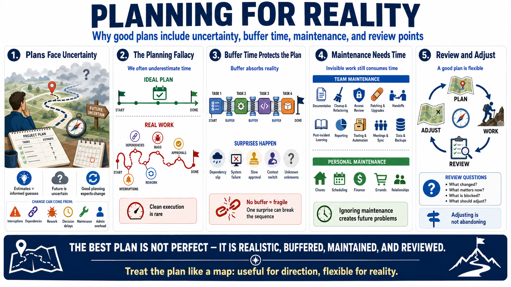

Planning Under Uncertainty
Connecting to LMS... Progress: in progress

Narration
Plans are useful because the future is uncertain, not because the future is perfectly knowable. Estimates are guesses made with incomplete information. The planning fallacy is the tendency to underestimate how long work will take, especially when the plan imagines clean execution and ignores interruptions, dependencies, rework, decision delays, maintenance, and administrative overhead. Good planning treats uncertainty as expected.
Buffer time is not laziness or pessimism. It is a way to absorb reality. Dependencies slip, systems fail, approvals take longer than expected, and people need time to switch contexts. Unknown unknowns appear most often in work that is new, cross-functional, technical, or high consequence. A plan with no buffer may look efficient, but it is fragile. A single surprise can collapse the whole sequence.
Maintenance work deserves explicit time. In teams, this includes documentation, cleanup, access reviews, backlog grooming, patching, handoffs, and post-incident learning. In personal life, it includes chores, scheduling, finance, errands, and relationship upkeep. Maintenance often lacks urgency until ignored for too long. When it is invisible, people overcommit because they plan only the headline tasks and not the work that keeps life and operations running.
Useful plans include review points. A review point asks what changed, what still matters, what is blocked, and what should be adjusted. Adjusting a plan is not the same as abandoning direction. It is how direction survives contact with real conditions. The plan should act like a map: helpful enough to guide movement, flexible enough to revise when the terrain turns out to be different.